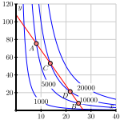

What geometric condition enables us to optimize a function \(f=f(x,y)\) subject to a constraint given by \(g(x,y) = k\text{,}\) where \(k\) is a constant?
We previously considered how to find the extreme values of functions on both unrestricted domains and on closed, bounded domains. Other types of optimization problems involve maximizing or minimizing a quantity subject to an external constraint. In these cases the extreme values frequently won’t occur at the points where the gradient is zero, but rather at other points that satisfy an important geometric condition. These problems are often called constrained optimization problems and can be solved with the method of Lagrange Multipliers, which we study in this section.
According to U.S. postal regulations, the girth plus the length of a parcel sent by mail may not exceed 108 inches, where by “girth” we mean the perimeter of the smallest end. Our goal is to find the largest possible volume of a rectangular parcel with a square end that can be sent by mail. (We solved this applied optimization problem in single variable Active Calculus, so it may look familiar. We take a different approach in this section, and this approach allows us to view most applied optimization problems from single variable calculus as constrained optimization problems, as well as provide us tools to solve a greater variety of optimization problems.) If we let \(x\) be the length of the side of one square end of the package and \(y\) the length of the package, then we want to maximize the volume \(f(x,y) = x^2y\) of the box subject to the constraint that the girth (\(4x\)) plus the length (\(y\)) is as large as possible, or \(4x+y = 108\text{.}\) The equation \(4x + y = 108\) is thus an external constraint on the variables.
The constraint equation involves the function \(g\) that is given by
\begin{equation*}
g(x,y) = 4x+y.
\end{equation*}
Explain why the constraint is a contour of \(g\text{,}\) and is therefore a two-dimensional curve.

A contour plot with horizontal coordinate labeled \(x\) going from 0 to 40 and vertical coordinate labeled \(y\) going from 0 to 120. Four contours are shown in blue with hyperbolic shape and asymptotes of the horizontal and vertical axes. These contours are labeled 1000, 5000, 10000, and 20000 as the contours step away from the origin. A red line is drawn from (0,110) to (27,0) with four points that intersect the middle two contours highlighted in red. The two intersections of the red line and the contour labeled 5000 are labeled A and B. The two intersections of the red line and the contour labeled 10000 are labeled C and D.
Figure 9.10.1 shows the graph of the constraint equation \(g(x,y) = 108\) along with a few contours of the volume function \(f\text{.}\) Since our goal is to find the maximum value of \(f\) subject to the constraint \(g(x,y) = 108\text{,}\) we want to find the point on our constraint curve that intersects the contours of \(f\) at which \(f\) has its largest value.
Points \(A\) and \(B\) in Figure 9.10.1 lie on a contour of \(f\) and on the constraint equation \(g(x,y) = 108\text{.}\) Explain why neither \(A\) nor \(B\) provides a maximum value of \(f\) that satisfies the constraint.
Points \(C\) and \(D\) in Figure 9.10.1 lie on a contour of \(f\) and on the constraint equation \(g(x,y) = 108\text{.}\) Explain why neither \(C\) nor \(D\) provides a maximum value of \(f\) that satisfies the constraint.
Based on your responses to parts i. and ii., draw the contour of \(f\) on which you believe \(f\) will achieve a maximum value subject to the constraint \(g(x,y) = 108\text{.}\) Explain why you drew the contour you did.
Recall that \(g(x,y) = 108\) is a contour of the function \(g\text{,}\) and that the gradient of a function is always orthogonal to its contours. With this in mind, how should \(\nabla f\) and \(\nabla g\) be related at the optimal point? Explain.
Subsection9.10.2Constrained Optimization and Lagrange Multipliers
In Preview Activity 9.10.1, we considered an optimization problem where there is an external constraint on the variables, namely that the girth plus the length of the package cannot exceed 108 inches. We saw that we can create a function \(g\) from the constraint, specifically \(g(x,y) = 4x+y\text{.}\) The constraint equation is then just a contour of \(g\text{,}\)\(g(x, y) = c\text{,}\) where \(c\) is a constant (in our case 108). Figure 9.10.2 illustrates that the volume function \(f\) is maximized, subject to the constraint \(g(x, y) = c\text{,}\) when the graph of \(g(x, y) = c\) is tangent to a contour of \(f\text{.}\) Moreover, the value of \(f\) on this contour is the sought maximum value.
A contour plot with horizontal coordinate labeled \(x\) going from 0 to 40 and vertical coordinate labeled \(y\) going from 0 to 120. Seven contours are shown in blue with hyperbolic shape and asymptotes of the horizontal and vertical axes. A red line is drawn from (0,110) to (27,0) with a tangential intersection between the red line and the middle contour highlighted with a point in red.
To find this point where the graph of the constraint is tangent to a contour of \(f\text{,}\) recall that \(\nabla f\) is perpendicular to the contours of \(f\) and \(\nabla g\) is perpendicular to the contour of \(g\text{.}\) At such a point, the vectors \(\nabla g\) and \(\nabla f\) are parallel, and thus we need to determine the points where this occurs. Recall that two vectors are parallel if one is a nonzero scalar multiple of the other, so we therefore look for values of a parameter \(\lambda\) that make
\begin{equation}
\nabla f = \lambda \nabla g.\tag{9.10.1}
\end{equation}
To find the values of \(\lambda\) that satisfy (9.10.1) for the volume function in Preview Activity 9.10.1, we calculate both \(\nabla f\) and \(\nabla g\text{.}\) Observe that
\begin{equation*}
\nabla f = 2xy \vi + x^2 \vj \ \ \ \ \text{ and } \ \ \ \ \nabla g = 4\vi + \vj,
\end{equation*}
in the three unknowns \(x\text{,}\)\(y\text{,}\) and \(\lambda\text{.}\) First, note that if \(\lambda = 0\text{,}\) then equation (9.10.3) shows that \(x=0\text{.}\) From this, Equation (9.10.4) tells us that \(y = 108\text{.}\) So the point \((0,108)\) is a point we need to consider. Next, provided that \(\lambda \neq 0\) (from which it follows that \(x \neq 0\) by Equation (9.10.3)), we may divide both sides of Equation (9.10.2) by the corresponding sides of (9.10.3) to eliminate \(\lambda\text{,}\) and thus find that
Thus we have \(y = 2x = 36\) and \(\lambda = x^2 = 324\) as another point to consider. So the points at which the gradients of \(f\) and \(g\) are parallel, and thus at which \(f\) may have a maximum or minimum subject to the constraint, are \((0,108)\) and \((18,36)\text{.}\) By evaluating the function \(f\) at these points, we see that we maximize the volume when the length of the square end of the box is 18 inches and the length is 36 inches, for a maximum volume of \(f(18,36) = 11664\) cubic inches. Since \(f(0,108) = 0\text{,}\) we obtain a minimum value at this point.
The general technique for optimizing a function \(f = f(x,y)\) subject to a constraint \(g(x,y)=c\) is to solve the system \(\nabla f = \lambda \nabla g\) and \(g(x,y)=c\) for \(x\text{,}\)\(y\text{,}\) and \(\lambda\text{.}\) We then evaluate the function \(f\) at each point \((x,y)\) that results from a solution to the system in order to find the optimum values of \(f\) subject to the constraint.
A cylindrical soda can holds about 355 cc of liquid. In this activity, we want to find the dimensions of such a can that will minimize the surface area. For the sake of simplicity, assume the can is a perfect cylinder.
What are the variables in this problem? Based on the context, what restriction(s), if any, are there on these variables?
What quantity do we want to optimize in this problem? What equation describes the constraint? (You need to decide which of these functions plays the role of \(f\) and which plays the role of \(g\) in our discussion of Lagrange multipliers.)
Use the method of Lagrange multipliers to find the dimensions of the least expensive packing crate with a volume of 240 cubic feet when the material for the top costs $2 per square foot, the bottom is $3 per square foot and the sides are $1.50 per square foot.
The method of Lagrange multipliers also works for functions of three variables. That is, if we have a function \(f = f(x,y,z)\) that we want to optimize subject to a constraint \(g(x,y,z) = k\text{,}\) the optimal point \((x,y,z)\) lies on the level surface \(S\) defined by the constraint \(g(x,y,z) = k\text{.}\) As we did in Preview Activity 9.10.1, we can argue that the optimal value occurs at the level surface \(f(x,y,z) = c\) that is tangent to \(S\text{.}\) Thus, the gradients of \(f\) and \(g\) are parallel at this optimal point. So, just as in the two variable case, we can optimize \(f = f(x,y,z)\) subject to the constraint \(g(x,y,z) = k\) by finding all points \((x,y,z)\) that satisfy \(\nabla f = \lambda \nabla g\) and \(g(x,y,z) = k\text{.}\)
The extrema of a function \(f=f(x,y)\) subject to a constraint \(g(x,y) = c\) occur at points for which the contour of \(f\) is tangent to the curve that represents the constraint equation. This occurs when
\begin{equation*}
\nabla f = \lambda \nabla g.
\end{equation*}
We use the condition \(\nabla f = \lambda \nabla g\) to generate a system of equations, together with the constraint \(g(x,y) = c\text{,}\) that may be solved for \(x\text{,}\)\(y\text{,}\) and \(\lambda\text{.}\) Once we have all the solutions, we evaluate \(f\) at each of the \((x,y)\) points to determine the extrema.
Use Lagrange multipliers to find the maximum and minimum values of \(f(x,y) = x - 2 y\) subject to the constraint \(x^2 + 3 y^2 = 21\text{,}\) if such values exist.
Use Lagrange multipliers to find the maximum and minimum values of \(f(x,y) = x^2 y + 3 y^2 - y\text{,}\) subject to the constraint \(x^2 + y^2 \leq 10\)
Note: If you need to find roots of a polynomial of degree \(\geq 3\text{,}\) you may want to use a calculator of computer to do so numerically. Also be sure that you can give a geometric justification for your answer.
(c) Find the minimum value of \(f(x,y)=x^2+y^2\) subject to the constraint \(4 x + 6 y = 19\) using the method of Lagrange multipliers and evaluate \(\lambda\text{.}\)
The plane \(x + y + 2z = 16\) intersects the paraboloid \(z = x^2 +
y^2\) in an ellipse. Find the points on this ellipse that are nearest to and farthest from the origin.
Find the maximum and minimum volumes of a rectangular box whose surface area equals 2000 square cm and whose edge length (sum of lengths of all edges) is 240 cm.
Hint: It can be deduced that the box is not a cube, so if x, y, and z are the lengths of the sides, you may want to let x represent a side with \(x \ne y\) and \(x \ne z\text{.}\)
The Cobb-Douglas production function is used in economics to model production levels based on labor and equipment. Suppose we have a specific Cobb-Douglas function of the form
where \(x\) is the dollar amount spent on labor and \(y\) the dollar amount spent on equipment. Use the method of Lagrange multipliers to determine how much should be spent on labor and how much on equipment to maximize productivity if we have a total of 1.5 million dollars to invest in labor and equipment.
Use the method of Lagrange multipliers to find the point on the line \(x-2y=5\) that is closest to the point \((1,3)\text{.}\) To do so, respond to the following prompts.
Write the function \(f=f(x,y)\) that measures the square of the distance from \((x,y)\) to \((1,3)\text{.}\) (The extrema of this function are the same as the extrema of the distance function, but \(f(x,y)\) is simpler to work with.)
Determine the points on the sphere \(x^2 + y^2 + z^2 = 4\) that are closest to and farthest from the point \((3,1,-1)\text{.}\) (As in the preceding exercise, you may find it simpler to work with the square of the distance formula, rather than the distance formula itself.)
Find the absolute maximum and minimum of \(f(x,y,z) = x^2 + y^2 + z^2\) subject to the constraint that \((x-3)^2 + (y+2)^2 + (z-5)^2 \le 16\text{.}\) (Hint: here the constraint is a closed, bounded region. Use the boundary of that region for applying Lagrange Multipliers, but don’t forget to also test any critical values of the function that lie in the interior of the region.)
In this exercise we consider how to apply the Method of Lagrange Multipliers to optimize functions of three variable subject to two constraints. Suppose we want to optimize \(f = f(x,y,z)\) subject to the constraints \(g(x,y,z) = c\) and \(h(x,y,z) = k\text{.}\) Also suppose that the two level surfaces \(g(x,y,z) = c\) and \(h(x,y,z) = k\) intersect at a curve \(C\text{.}\) The optimum point \(P = (x_0,y_0,z_0)\) will then lie on \(C\text{.}\)
Assume that \(C\) can be represented parametrically by a vector-valued function \(\vr = \vr(t)\text{.}\) Let \(\overrightarrow{OP} = \vr(t_0)\text{.}\) Use the Chain Rule applied to \(f(\vr(t))\text{,}\)\(g(\vr(t))\text{,}\) and \(h(\vr(t))\text{,}\) to explain why
Explain how this shows that \(\nabla f(x_0,y_0,z_0)\text{,}\)\(\nabla g(x_0,y_0,z_0)\text{,}\) and \(\nabla h(x_0,y_0,z_0)\) are all orthogonal to \(C\) at \(P\text{.}\) This shows that \(\nabla f(x_0,y_0,z_0)\text{,}\)\(\nabla g(x_0,y_0,z_0)\text{,}\) and \(\nabla h(x_0,y_0,z_0)\) all lie in the same plane.
Assuming that \(\nabla g(x_0,y_0,z_0)\) and \(\nabla h(x_0,y_0,z_0)\) are nonzero and not parallel, explain why every point in the plane determined by \(\nabla g(x_0,y_0,z_0)\) and \(\nabla h(x_0,y_0,z_0)\) has the form \(s\nabla g(x_0,y_0,z_0)+t\nabla h(x_0,y_0,z_0)\) for some scalars \(s\) and \(t\text{.}\)
There is a useful interpretation of the Lagrange multiplier \(\lambda\text{.}\) Assume that we want to optimize a function \(f\) with constraint \(g(x,y)=c\text{.}\) Recall that an optimal solution occurs at a point \((x_0, y_0)\) where \(\nabla f = \lambda \nabla g\text{.}\) As the constraint changes, so does the point at which the optimal solution occurs. So we can think of the optimal point as a function of the parameter \(c\text{,}\) that is \(x_0 = x_0(c)\) and \(y_0=y_0(c)\text{.}\) The optimal value of \(f\) subject to the constraint can then be considered as a function of \(c\) defined by \(f(x_0(c), y_0(c))\text{.}\) The Chain Rule shows that
Conclude that \(\lambda\) tells us the rate of change of the function \(f\) as the parameter \(c\) increases (or by approximately how much the optimal value of the function \(f\) will change if we increase the value of \(c\) by 1 unit).
Suppose that \(\lambda = 324\) at the point where the package described in Preview Activity 9.10.1 has its maximum volume. Explain in context what the value \(324\) tells us about the package.
Suppose that the maximum value of a function \(f = f(x,y)\) subject to a constraint \(g(x,y) = 100\) is \(236\text{.}\) When using the method of Lagrange multipliers and solving \(\nabla f = \lambda \nabla g\text{,}\) we obtain a value of \(\lambda = 15\) at this maximum. Find an approximation to the maximum value of \(f\) subject to the constraint \(g(x,y) = 98\text{.}\)